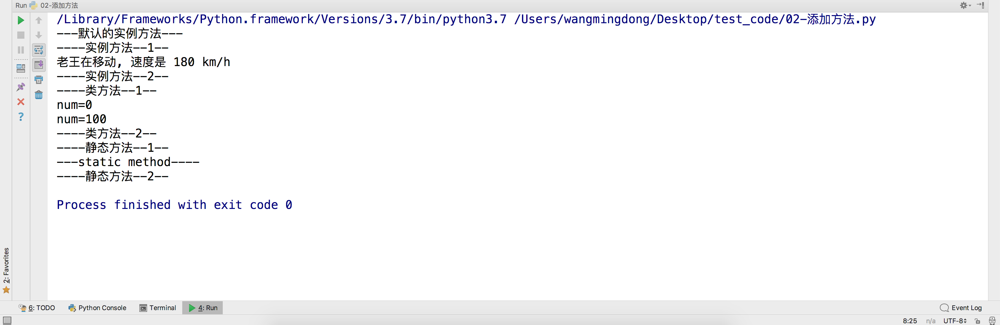

Python是动态语言
1. 动态语言的定义
动态编程语言 是 高级程序设计语言 的一个类别，在计算机科学领域已被广泛应用。它是一类 在运行时可以改变其结构的语言
例如：新的函数、对象、甚至代码可以被引进，已有的函数可以被删除或是其他结构上的变化。
动态语言目前非常具有活力。例如Pythont便是一个动态语言，除此之外如 PHP 、 Ruby 、 JavaScript 等也都属于动态语言，而 C语言 、C++ 等语言则不属于动态语言。----来自 维基百科
2. 运行中给实例对象绑定(添加)属性
>>> class Person(object):
def __init__(self, name=None, age=None):
self.name = name
self.age = age
>>> p = Person("小明", "24")
>>>
在这里，我们定义了1个类Person，在这个类里，定义了两个初始属性name和age，但是人还有性别啊！如果这个类不是你写的是不是你会尝试访问性别这个属性呢？
>>> p.sex = "male"
>>> p.sex
'male'
>>>
这时候就发现问题了，我们定义的类里面没有sex这个属性啊！怎么回事呢？ 这就是动态语言的魅力和坑！
这里实际上就是动态给实例绑定属性！
3. 运行中给类绑定(添加)属性
>>> p1 = Person("小丽", "25")
>>> p1.sex
Traceback (most recent call last):
File "<pyshell#21>", line 1, in <module>
p1.sex
AttributeError: Person instance has no attribute 'sex'
>>>
我们尝试打印p1.sex，发现报错，p1没有sex这个属性！—— 给p这个实例绑定属性对p1这个实例不起作用！ 那我们要给所有的Person的所有实例加上 sex属性怎么办呢？
答案就是直接给Person类绑定属性！
>>>> Person.sex = None # 给类Person添加一个属性
>>> p2 = Person("小丽", "25")
>>> print(p2.sex) # 如果p2这个实例对象中没有sex属性的话，那么就会访问它的类属性
None # 可以看到没有出现异常
>>>
4. 运行中给实例对象绑定(添加)方法
我们直接给Person绑定sex这个属性，然后实例化p2后，p2就有sex这个属性了！ 那么方法呢？怎么绑定？
>>> class Person(object):
def __init__(self, name=None, age=None):
self.name = name
self.age = age
def eat(self):
print("eat food")
>>> def run(self, speed):
print("%s在移动, 速度是%dkm/h" % (self.name, speed))
>>> p3 = Person("老王", 24)
>>> p3.eat()
eat food
>>>
>>> p3.run()
Traceback (most recent call last):
File "<pyshell#5>", line 1, in <module>
p3.run()
AttributeError: Person instance has no attribute 'run'
>>>
>>>
>>> import types
>>> p3.run = types.MethodType(run, p3)
>>> p3.run(180)
老王在移动,速度是180km/h
5. 完整的代码
import types
# 定义了一个类
class Person(object):
num = 0
def __init__(self, name = None, age = None):
self.name = name
self.age = age
def eat(self):
print("---默认的实例方法---")
# 定义一个实例方法
def run(self, speed):
print("----实例方法--1--")
print("%s在移动, 速度是 %d km/h"%(self.name, speed))
print("----实例方法--2--")
# 定义一个类方法
@classmethod
def test_class(cls):
print("----类方法--1--")
print("num=%d" % cls.num)
cls.num = 100
print("num=%d" % cls.num)
print("----类方法--2--")
# 定义一个静态方法
@staticmethod
def test_static():
print("----静态方法--1--")
print("---static method----")
print("----静态方法--2--")
# 创建一个实例对象
p = Person("老王", 24)
# 调用在class中的方法
p.eat()
# 给这个对象添加实例方法
p.run = types.MethodType(run, p)
# 调用实例方法
p.run(180)
# 给Person类绑定类方法
Person.test_class = test_class
# 调用类方法
Person.test_class()
# 给Person类绑定静态方法
Person.test_static = test_static
# 调用静态方法
Person.test_static()
以上代码运行结果:

6. 运行中删除属性、方法
删除的方法:
del 对象.属性名delattr(对象, "属性名")
7. 总结
- Python可以在运行的过程中，修改程序的运行结构，例如可以修改调用的函数等
- 对象中其实一切皆属性，方法其实也是属性，只不过这个可以进行调用而已，例如
实例对象名.属性名() - 相对于动态语言，静态语言具有严谨性！所以，玩动态语言的时候，小心动态的坑！
那么怎么避免这种情况呢？ 请使用__slots__